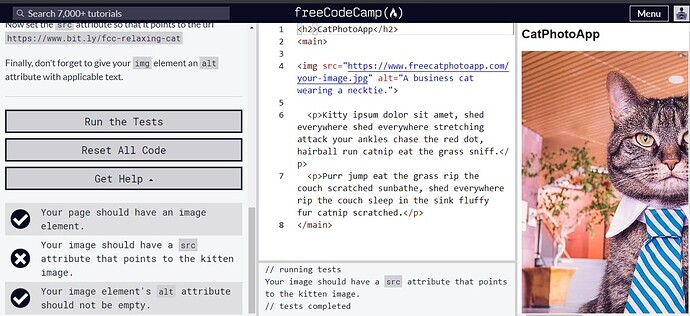
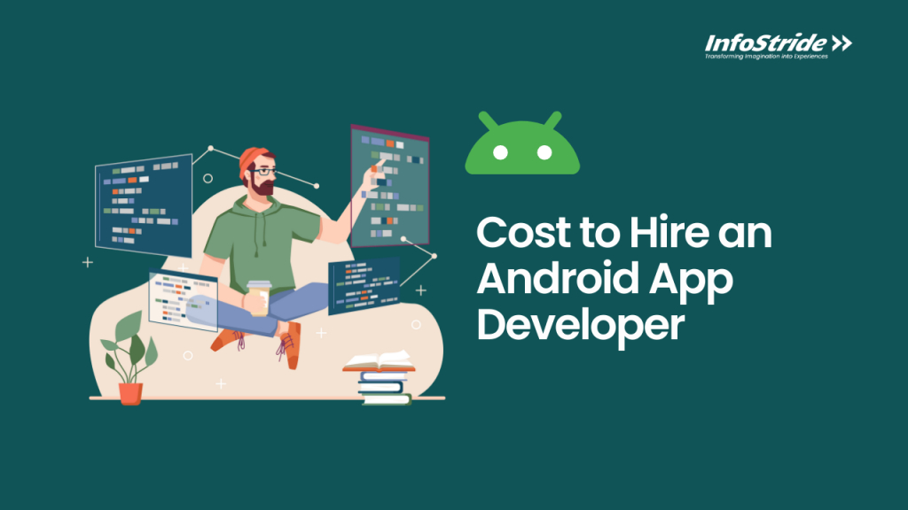
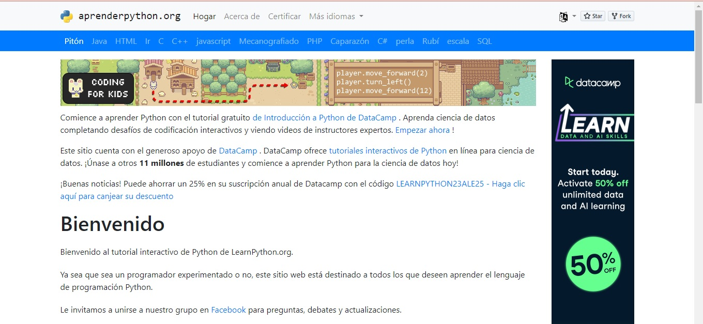
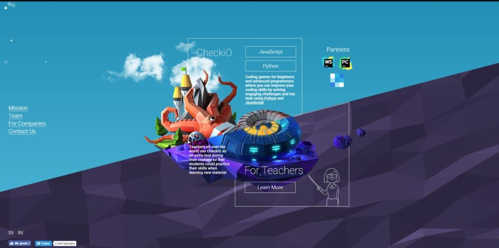

plataformas para dar tus primeros pasos en la programacion
¿No sabes por dónde empezar?
Si estás iniciando tu camino en la programación, o es la primera vez que visitas la página, no te preocupes, porque esta guía te mostrará los contenidos de forma ordenada. La intención de esta guía de introducción a la programación es ayudarte a escoger por dónde empezar y qué camino seguir en el desarrollo en general. Si aprendes a programar adecuadamente, podrás desarrollar aplicaciones móviles, sistemas web, videojuegos, y cualquier tipo de software en general, usando distintas tecnologías. De hecho, una vez que aprendes a programar, tu imaginación será tu única limitante.
te dejamos distintas plataformas para saber donde comenzar y continuar aprendiendo:
freeCodeCamp
Es esta web no solo puedes aprender a programar gratis, sino que al mismo tiempo ganarás experiencia escribiendo código En freeCodeCamp cuentan con una serie de programas completos de especialización para aprender a programar desde cero. Desde diseño web responsivo, a librerías frontend, visualización de datos, algoritmos y estructuras de datos con JavaScript, APIs y microservicios estructuras
Google Android Training
Google Developers Training, puedes aprender a codificar y obtener una Certificación de Google Developers. La plataforma de Google Android Training ofrece tutoriales de codificación, guías, casos prácticos, herramientas como Chrome DevTools o Lighthouse, etc. En este caso, la oferta formativa está orientada a profesionales de nivel intermedio o avanzado, no es apto para principiantes. Los programas disponibles son: desarrollo de Android, desarrollo web, firebase, aprendizaje automático
LearnPython.org
Tal y como su propio nombre indica, LearnPython.org es un sitio web para aprender el lenguaje de programación Python. Se centra en enseñar principalmente el lenguaje de programación Python, desde conceptos básicos hasta temas más avanzados. No obstante, si accedes al sitio web, puedes encontrar cursos de otros lenguajes como: Java, HTML, C, C++, JavaScript, PHP, Shell, Ruby, Scala, SQL…
asi como tambien existen muchas plataformas tambien existen muchos juegos
La programación, a menudo percibida como un desafío intelectual, se ha transformado en una experiencia lúdica gracias a una serie de juegos educativos diseñados para enseñar habilidades de codificación de manera divertida y efectiva.
Super Markup Man

Super Markup Man nos ofrece una experiencia de juego de plataformas con el objetivo de iniciarnos en el uso de HTML y CSS. Apto para dummies absolutos en programación web, que podrán ir visualizando en el lado derecho de la pantalla cómo afectan a la visualización de la web los cambios que realizamos en el orden de las etiquetas.
while True:learn()

La historia de while True:learn() es muy simple: un geek prototípico decide crear una IA para comunicarse con su gato después de descubrir que éste sabe programar (le arregla un bug mientras se va a por café). Y para ello 'qooglea' hasta llegar a los foros de 'CatOverflow' (guiño, guiño), donde otros usuarios (PNJs) nos irán asignando tareas. Esta rocambolesca situación es la excusa para plantear un videojuego muy divulgativo que nos va introduciendo poco a poco en los conceptos básicos de la programación y de la inteligencia artificial. También en este caso recurriremos a la programación visual, basada en conectar nodos para regular el flujo de datos.
CheckiO
Otra plataforma gratuita es CheckiO, a través de la cual accederás a un universo creado por la propia comunidad de desarrolladores y en la que tú mismo podrás desarrollar nuevos niveles para que otros jueguen. CheckiO soporta Javascript y Python y presenta retos y juegos de programación tanto para programadores principiantes como para desarrolladores avanzados. Desde marzo de 2019 Checkio se ha integrado en la oferta Educational Tools de JetBrains, que pone a disposición de la plataforma sus productos WebStorm, IDE para Javascript, y PyCharm , el IDE de JetBrains para programar Python.
Flexbox Zombies

Flexbox Zombies es una videojuego para aprender a utilizar Flexbox, el módulo de diseño flexible en CSS3 que surgió en 2015 como herramienta para mejorar la manera de programar un diseño responsive y evitar el uso de float. Se trata de un curso de capacitación basado en una historia en la que utilizarás Flexbox y una ballesta para cazar zombies. A través de este videojuego entenderás la sintaxis CSS y cuándo y cómo utilizar cada propiedad. Una buena manera de aprender si estás comenzando con Flexbox.